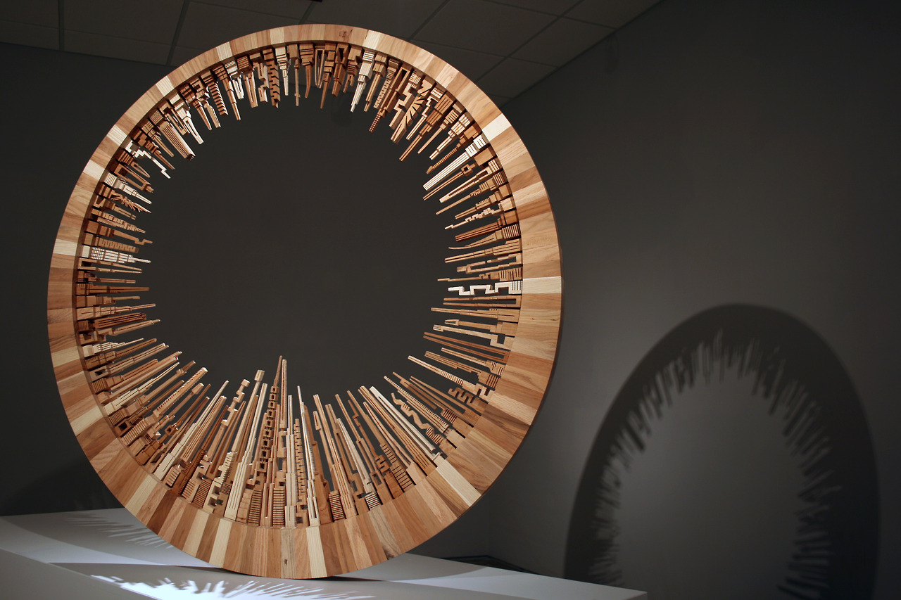
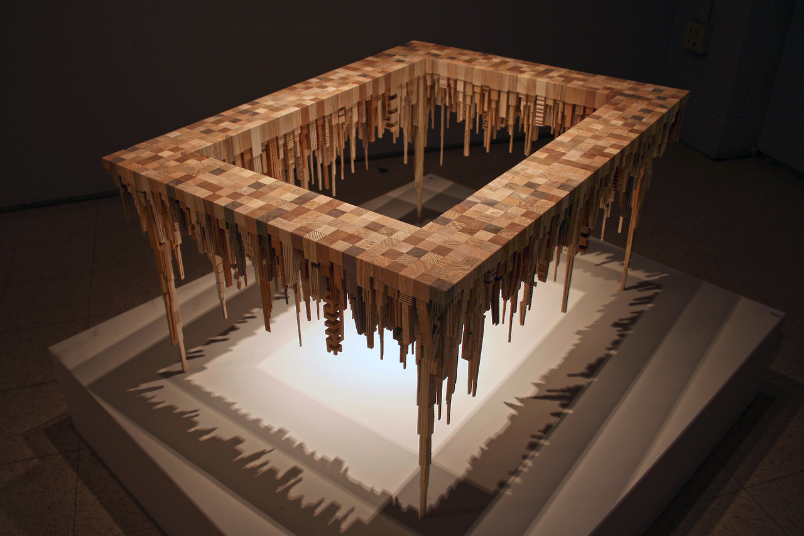
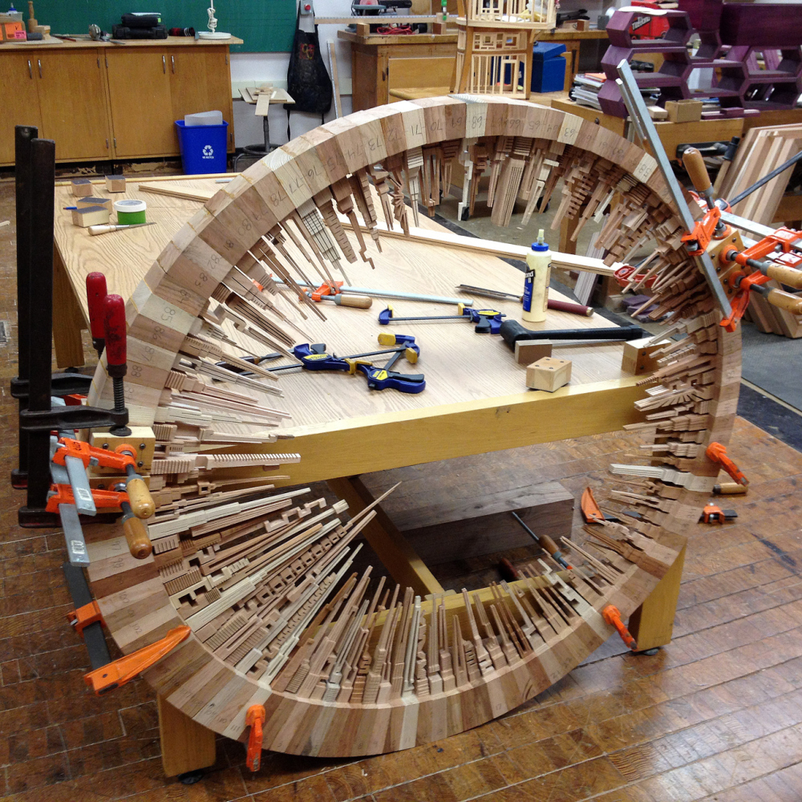
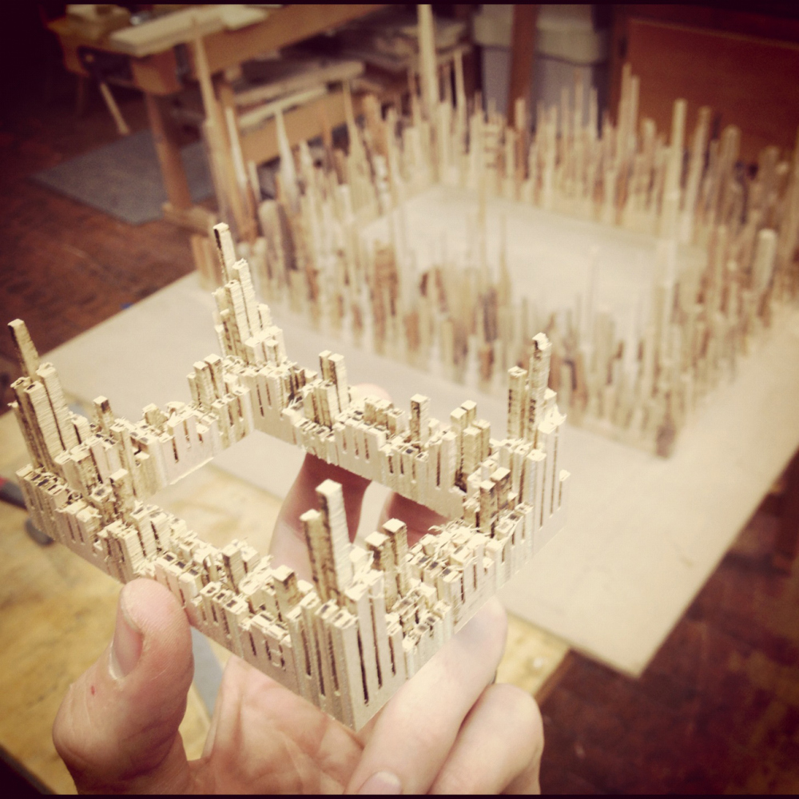

The City Series
Using pieces of cherry, oak, ash, and maple James McNabb carefully creates bandsaw cut abstracted architectural forms that he combines in a wheel, table and sphere.
The City Series is a collection of wood sculptures that represent a woodworker’s journey from the suburbs to the city. Each piece depicts the outsider’s perspective of the urban landscape. Made entirely of scrap wood, this work is an interpretation of making something out of nothing. Each piece is cut intuitively on a band saw. The result is a collection of architectural forms, each distinctly different from the next.